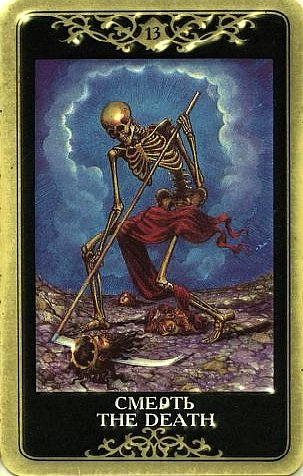

Переход. Окончание. Трансформация.
Основное значение карты – близок естественный конец существующей ситуации. И в этом нет ничего плохого. Смерть – исцеляющее начало жизни. Прорицательные толкования этого Аркана всегда были скорее позитивными, чем негативными: благоприятные перемены и вечное движение, преображение и избавление от ненужного.

По Смерти процессы заканчиваются, циклы завершаются, проекты входят в фазу окончания, имеющееся разрушается.
Смерть не несет успеха, но расчищает путь для новых усилий и нового витка.
Поскольку расклады обычно делаются в тех случаях, когда вопрошающий питает надежды на что-либо, выпадение этой карты с ее пафосом явного «нет» мало радует.
По Смерти дела срываются, мы отказываемся от своих целей и предаем свои проекты забвению.
В то же время, Смерть распахивает врата в новую жизнь. А какой может оказаться эта новая жизнь, подскажут другие карты.
Может быть, трудно отпустить то, что было когда-то столь ценным, но необходимо признать, что пора проститься с этим.
Ничто не делает опыт Смерти легким, однако начало новой эпохи зачастую имеет оттенок тревожной радости.
В определенном смысле, Тринадцатый Аркан является хорошей картой в том случае, если необходимость перемен и глубинных, радикальных преобразований не пугают.
Его значение можно также связать с победой человека над самим собой.
Перемены, которые она несет, весьма глубоки и необратимы. Смерть никогда не ошибается. Если она сообщает, что с чем-то пора прощаться, значит, на данный момент это необходимо для дальнейшего движения.
Основное значение карты – близок конец существующей ситуации.
Разрыв с прошлым, конец текущему положению дел, окончание такой жизни вопрошающего, какова она есть. Карта говорит о том, что нечто в жизни подходит к своему логическому, назревшему концу.
Это какой-то поворотный момент, который может касаться стиля жизни, работы, отношений. Самое главное при интерпретации – суметь здраво связать карту с вопросом.
ЛИЧНЫЕ ОТНОШЕНИЯ
Разрушение, распад, конец – все эти значения тринадцатого Аркана обычно достаточно ярко проявляются, если вопрос касается любви.
Нередко карта сообщает, что пришло время расстаться, найти замену исчерпавшим себя отношениям.
Смерть, как правило, отмечает их естественное окончание. По этому Аркану есть шанс расстаться друзьями, особенно если другие карты этому не противоречат.
Это также типичная карта развода в тех случаях, когда отношения мало-помалу утратили жизнеспособность.
В любом случае, это завершение какого-то жизненного периода.
Если период по духу соответствовал Повешенному (бессилие, кризис, отчаяние), то Смерть несет прекрасную весть – все это, наконец, окажется позади.
Если вопрошающий терзался, не зная, как добиться развода, то выпавшая Смерть четко дает понять, что теперь появится возможность оставить неудавшийся брак за спиной, начать все с начала и построить новую жизнь.
Смерть может отразить как умершие чувства, так и страх потери отношений, которые все еще важны (есть смысл обратить пристальное внимание на карты Чаш, если они присутствуют в раскладе).
Смерть отмечает «форму без содержания» - например, брак, который все еще считается существующим, но по сути лишился эмоционального наполнения.
Партнер, описываемый картой Смерть, принял четкое решение расстаться и отпустить.